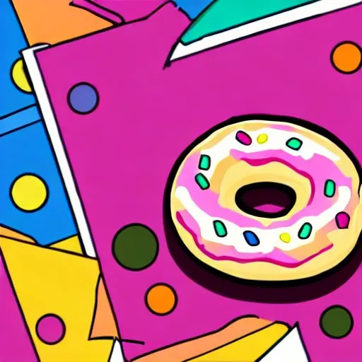
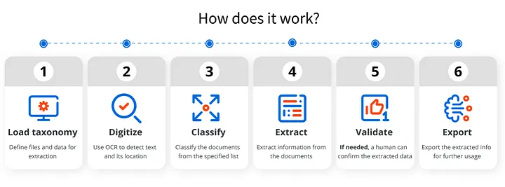
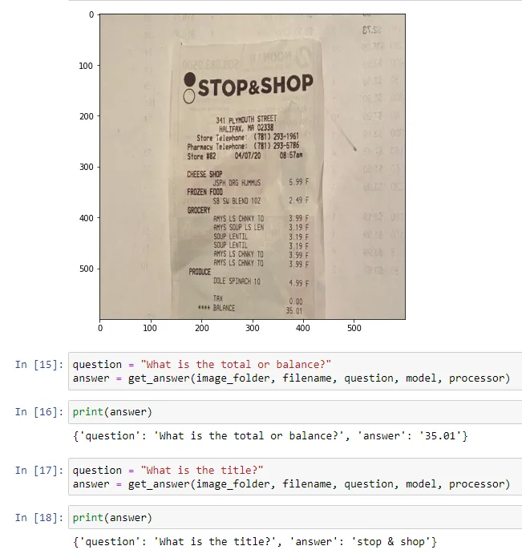
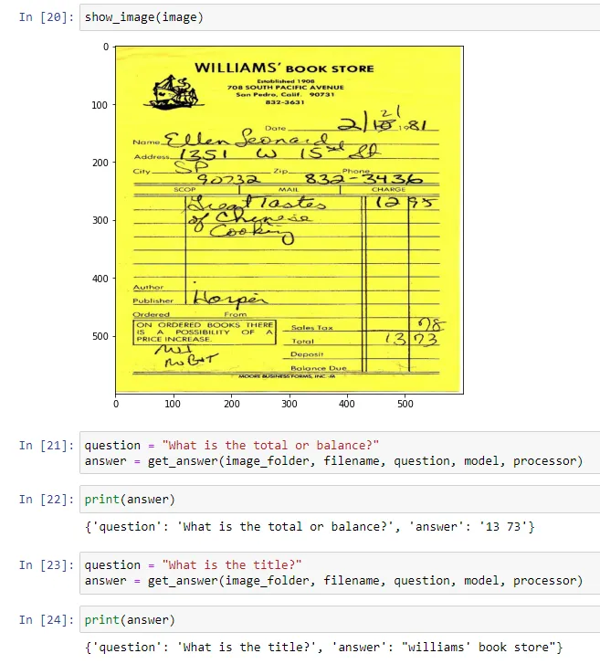
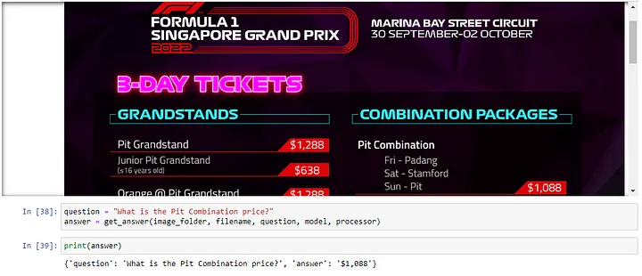
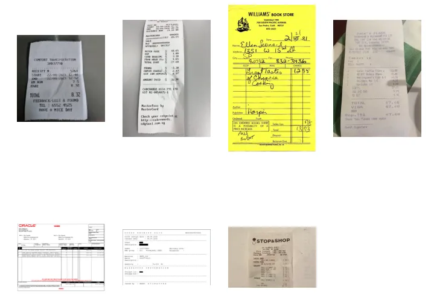
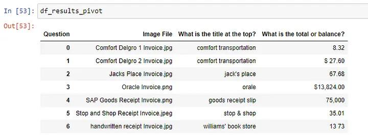

Impressive yet easy to implement Document Understanding system with OCR-free Donut Transformers Model in Python

Introduction
Recently, with the release of the stable version of transformers v4.22 in September 2022, there were some new interesting models which were released. The Donut Transformers model, an OCR-Free Visual Document Understanding (VDU), was particularly interesting as I was looking for a image to text data extraction model to deploy in one of the current projects. More details about the model can be found here: OCR-free Document Understanding Transformer by Geewook Kim, Teakgyu Hong, Moonbin Yim, Jeongyeon Nam, Jinyoung Park, Jinyeong Yim, Wonseok Hwang, Sangdoo Yun, Dongyoon Han, Seunghyun Park.
Overall, I found the version fine-tuned on DocVQA (visual question answering on documents) to be the most versatile and easy to implement and use.
- Text extracted is highly accurate based on the pretrained model and it can even recognize hand written digits
- The same data can be extracted from images of different file formats and structure as long as the identifying segment e.g. total, balance etc. is present
- Data to be extracted from images can be customized based on the questions being fed to the model
- It is a very magical and amazing experience to interact with scanned copies of receipts, invoices with questions =)
OPTIMIZING ON A TYPICAL DOCUMENT UNDERSTANDING PIPELINE

The typical document understanding work flow will be very similar as the process flow illustrated above where the first step would using OCR (Optical Character Recognition) library or software to extract the raw text from the document. Common popular libraries for implementing OCR include pytesseract and tesserocr. Based on the raw text extracted, additional Machine Learning Language Modeling or Regex Text Extraction will need to be employed to retrieve useful information from the raw text.
However, with the Donut DocVQA model, this end to end process can be greatly simplified and optimized.
INSTALLATION
There are two main libraries required to implement the Donut VQA model:
- PyTorch (https://pytorch.org/TensorRT/tutorials/installation.html)
- Transformers and Sentence Piece
pip install transformers[sentencepiece]
SAMPLE NOTEBOOK
The Donut related documentation on Hugging Face (https://huggingface.co/docs/transformers/main/en/model_doc/donut) and the tutorial by Niels Rogge (https://github.com/NielsRogge/Transformers-Tutorials/tree/master/Donut/DocVQA) provided the complete starter code for using the transformers model.
Referencing from the materials, I adapted the code to apply the transformer model to work with multiple images within a specified folder. A sample of my code can be found at:
https://github.com/ZS-Weng/Machine_Learning/DonutDocVQA
The core of the code function is as below:
from transformers import DonutProcessor, VisionEncoderDecoderModel
processor = DonutProcessor.from_pretrained("naver-clova-ix/donut-base-finetuned-docvqa")
model = VisionEncoderDecoderModel.from_pretrained("naver-clova-ix/donut-base-finetuned-docvqa")
def get_answer(folder_path, filename, question, model, processor):
image = Image.open(folder_path/filename).convert('RGB')
pixel_values = processor(image, return_tensors="pt").pixel_values
prompt = f"<s_docvqa><s_question>{question}</s_question><s_answer>"
decoder_input_ids = processor.tokenizer(prompt, add_special_tokens=False, return_tensors="pt")["input_ids"]
device = "cuda" if torch.cuda.is_available() else "cpu"
model.to(device)
outputs = model.generate(pixel_values.to(device),
decoder_input_ids=decoder_input_ids.to(device),
max_length=model.decoder.config.max_position_embeddings,
early_stopping=True,
pad_token_id=processor.tokenizer.pad_token_id,
eos_token_id=processor.tokenizer.eos_token_id,
use_cache=True,
num_beams=1,
bad_words_ids=[[processor.tokenizer.unk_token_id]],
return_dict_in_generate=True,
output_scores=True)
seq = processor.batch_decode(outputs.sequences)[0]
seq = seq.replace(processor.tokenizer.eos_token, "").replace(processor.tokenizer.pad_token, "")
seq = re.sub(r"<.*?>", "", seq, count=1).strip() # remove first task start token
return processor.token2json(seq)RESULTS
1. Testing on a general receipt
DonutDocVQA was able to pick up both the title and the total amount on a general receipt.

2. Testing on a receipt with hand written details
DonutDocVQA was able to perform well to detect even information based on hand written digits.

3. Testing on a F1 Poster
Even though the digits were not that clear on a red background and the price of the categories “Pit Combination” is not right beside the category text, DonutDocVQA was able to pick up the correct prices.

4. Extracting Similar Information from Multiple Documents
For multiple documents with different formats as show below where there is a mix of different receipts, invoices, etc. a loop can be setup to extract similar information and consolidated into a tabular data structure.


CONCLUSION
The Donut Transformers model is a versatile and impressive tool for document understanding which can be used out of the box leveraging on the pre-trained weights. I feel that this could be a game changer which can potentially save a significant amount of time and resources for a variety of document understanding tasks expediting the end to end development process. Lastly, the intuitive way of using questions to query images would enhance user experience and drive more collaborations and interesting ideas in applying technology in novel ways.
Thanks for reading and hope the information was useful in some way!